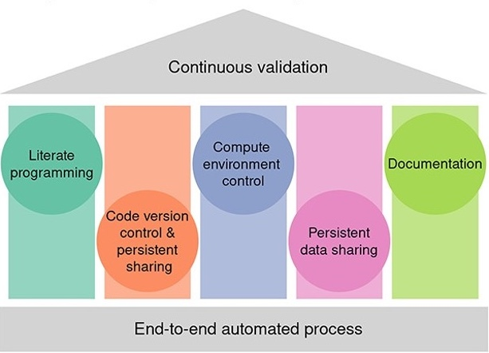
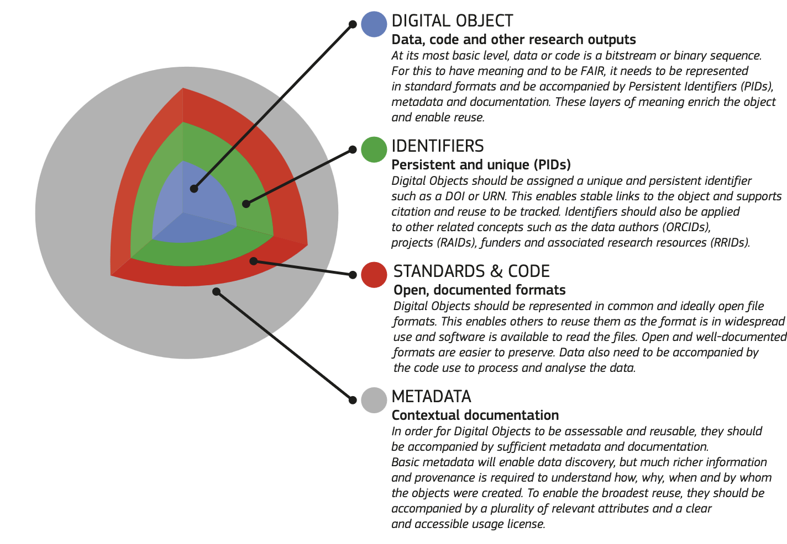

1. Make your research FAIRer with Quarto, GitHub and Zenodo
Introduction of the tutorial
2025-07-08
Teachers
- Monique Zahn - Training coordinator at SIB
- Geert van Geest - Training coordinator at SIB, original author of this course
- Wandrille Duchemin - Bioinformatician and trainer, SIB and sciCORE Basel
Learning outcomes
Create notebooks and websites based on Markdown and R with Quarto
Use Git and GitHub to version control the generated content
Host a website by making use of GitHub actions and GitHub pages
Link the GitHub repository to Zenodo and give it a unique identifier (DOI)
Learning experiences
Lectures
Polls/quiz questions
Exercises
Communication
During lectures: Zoom
During exercises: Slack
Tutorial website:
sib-swiss.github.io/reproducible-analysis-trainingAsk questions at any time!
Question 1-3
Scan the QR code
OR: go to vevox.com and use the following code:
141-325-946
Introduction round
Introduce yourself:
Your job/study
Why you are joining
Reproducible research
- Reproducibility: The principle stating that results … should be achieved again with a high degree of reliability when the analysis is replicated.
- Main purpose: the ability to validate
- Resulting in transparency and open science
Five pillars of reproducible research

Reusability is even better
- Reproducibility: The principle stating that results … should be achieved again with a high degree of reliability when the analysis is replicated.
- Reusability: The extend to which existing digital objects can be used for other purposes than their initial purpose.
FAIR principles
Findable
Accessible
Interoperable
Reusable

Why would I make my analysis reusable?
Because journals/funding agencies require you to..
Share with others:
People will appreciate!
Identify mistakes or bugs
Colleagues can redo your experiments/analysis
Redo your own experiments/analysis
Why can reusable data analysis be difficult?
Short term goal: get your results ASAP
Mid term goal: publish
Long term goal: re-use and stand on the shoulder of giants!
Make it a habit
The longer it takes to reach goals ..
The less likely we are motivated to invest time ..
Like dieting, exercise, proper sleeping..
Be successful by making reusability a habit!

Software
Developed continuously
Developed by teams
Developed for others
Data is input
Defined interface
Extensive testing
Reusability is enforced
Data analysis
Developed ‘once’
Usually single researcher
Developer = user
Developed for single dataset
Users interact with code
Mistakes can go undetected
Reusability is a choice
Think like a software engineer
Prepare to:
Develop your code further and collaborate
Let others reuse your code
Allow for different data input
Important:
Good coding practices
Documentation (this course)
Version control (this course)
Applying FAIR principles to your analysis
Make your analysis Reusable:
Code: style + context, version control (git)
Workflows: e.g. snakemake, nextflow
Environments: e.g. conda, renv, containers
Make your analysis Findable:
Unique identifier
Long term storage
Describe
This course
In this course:
Tell your story together with code by using Quarto
Version control your work with git and GitHub
Store it with Zenodo
Not in this course:
Good coding practices
Workflows
Environments
Tutorial overview
Part 1:
Creating notebooks with Quarto
Basics of version control with git and GitHub
Part 2:
Using GitHub pages to create a website with Quarto
Introduction to Zenodo